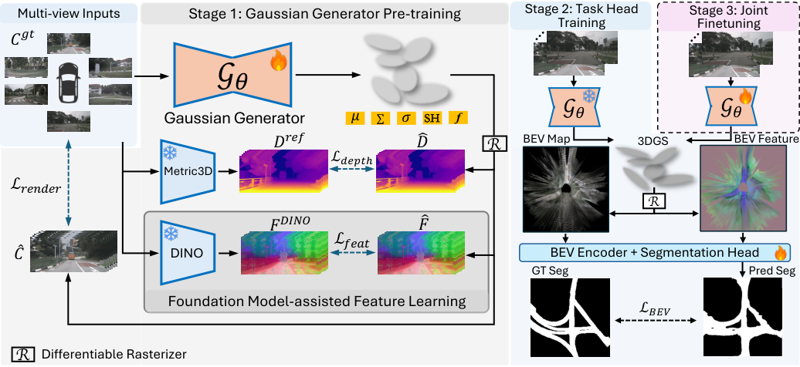
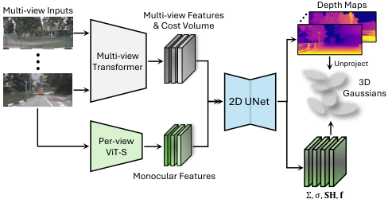
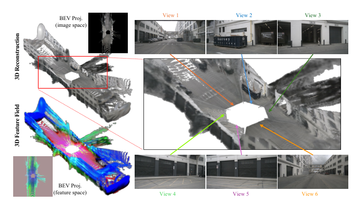
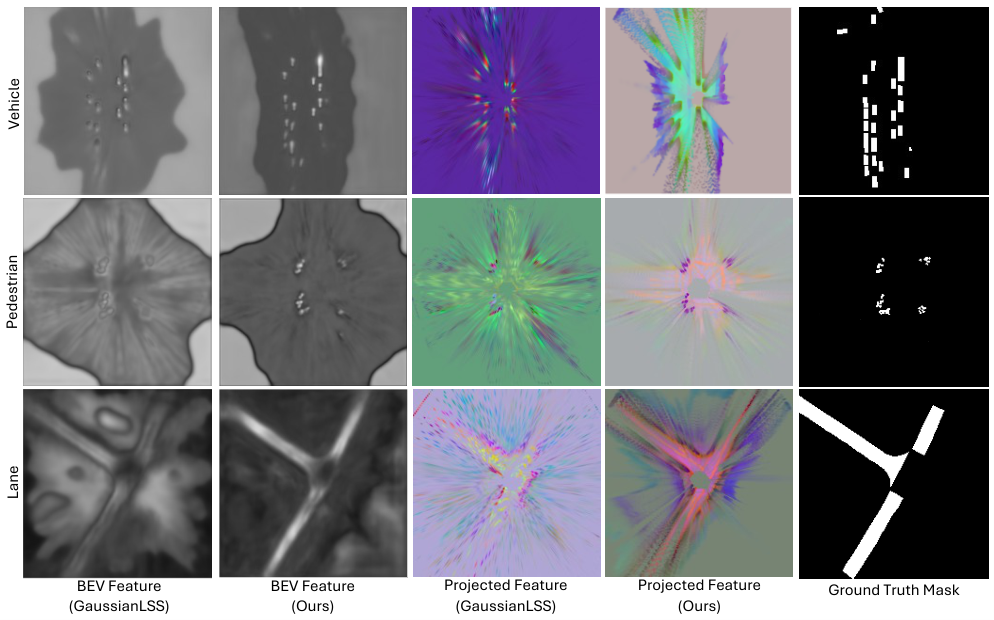

Reconstruction
简单摘要
鸟瞰 (BEV) 感知是自动驾驶的基石，提供统一的空间表示，融合周围视图图像，从而支持各种下游任务的推理，例如语义分割、3D 对象检测。作者的总体方法路径是：然而，大多数现有的 BEV 感知框架采用端到端训练范例，其中图像特征直接转换到 BEV 空间，并仅通过下游任务监督进行优化。
另外一个关键点是，此公式将整个感知过程视为黑匣子，通常缺乏明确的 3D 几何理解和可解释性，导致性能不佳。从结果来看，在本文中，我们声称明确的 3D 表示对于准确的 BEV 感知很重要，并且我们提出了 Splat2BEV，一种用于 BEV 任务的高斯 Splatting 辅助框架。


这种 BEV 特征的隐式学习过程会导致生成不精确且低质量的 BEV 特征图，最终导致关键下游自动驾驶任务的性能不佳。作者的总体方法路径是：在本文中，我们提出了 Splat2BEV，一种用于 BEV 感知的高斯 Splatting 辅助框架。
另外一个关键点是，利用 3D 重建，我们的框架生成几何对齐的特征表示，从而增强下游 BEV 任务的有效性。从结果来看，拟议管道的概述及其与传统端到端范例的比较如图：预告片所示。
核心创新
这篇工作的创新不是简单堆模块，而是把问题重新定义为：在本文中，我们声称明确的 3D 表示对于准确的 BEV 感知很重要，并且我们提出了 Splat2BEV，一种用于 BEV 任务的高斯 Splatting 辅助框架。
另一项关键新意在于：我们首先预训练一个高斯生成器，它可以根据多视图输入显式重建 3D 场景，从而生成几何对齐的特征表示。这使方法不只是能生成结果，更能解释为什么会有效。
进一步看，我们提出的 Splat2BEV 是一种高斯 Splatting 辅助框架，可显式重建场景以实现准确的鸟瞰 (BEV) 感知。这也是它和纯工程拼装方案拉开差距的地方。
技术细节
方法主干可以概括为：我们提出的 Splat2BEV 是一种高斯 Splatting 辅助框架，可显式重建场景以实现准确的鸟瞰 (BEV) 感知。其中最关键的环节是：给定多视图透视图像作为输入，Splat2BEV 首先预训练能够重建 3D 场景的前馈高斯生成器（subsec:GS 和 subsec:feature）。这种设计直接带来的效果是：在第二阶段，高斯生成器被冻结，并将重建的场景投影到鸟瞰图（BEV）中以进行下游任务头训练（subsec:bev、subsec:task）。从训练与推理角度看，作者还专门处理了：这里， 表示可微渲染函数，该函数根据给定相机姿势 的重建高斯函数合成图像。这组公式用于定义模型中的变量关系和训练目标。建议先看左侧要预测的对象，再看右侧每一项如何约束优化方向。该公式用于定义核心计算关系。阅读时先看左侧目标量，再看右侧由 L、k、i、k 等变量构成的约束和聚合方式。该公式用于定义核心计算关系。阅读时先看左侧目标量，再看右侧由 C、R、G、P 等变量构成的约束和聚合方式。该公式用于定义核心计算关系。阅读时先看左侧目标量，再看右侧由 L、k、i、k 等变量构成的约束和聚合方式。这组公式用于定义模型中的变量关系和训练目标。建议先看左侧要预测的对象，再看右侧每一项如何约束优化方向。该公式用于定义核心计算关系。阅读时先看左侧目标量，再看右侧由 p、D、p、D 等变量构成的约束和聚合方式。该公式用于定义核心计算关系。阅读时先看左侧目标量，再看右侧由 G、I、G、G 等变量构成的约束和聚合方式。该公式用于定义核心计算关系。阅读时先看左侧目标量，再看右侧由 L、k、i、k 等变量构成的约束和聚合方式。
$$ \mathbf{C}(p) = \sum_{i=1}^{N} T_i \, \sigma_i \, \mathbf{c}_i, \ \text{where} \ T_i = \prod_{j < i} (1 - \sigma_j). $$
$$ \mathcal{L}_{\text{render}} = \frac{1}{k} \sum_{i=1}^{k} \| \widehat{\mathbf{C}}_i - \mathbf{C}_i^{\text{gt}} \|_2^2, $$
$$ \widehat{\mathbf{C}}_i = \mathcal{R}\big(\mathbf{G}; \mathbf{P}_i\big). $$
$$ \mathcal{L}_{\text{depth}}^{L1} = \frac{1}{k} \sum_{i=1}^{k} \| \widehat{\mathbf{D}}_i - \mathbf{D}_i^{\text{ref}} \|_1, $$
$$ \mathcal{L}_{\text{depth}}^{\text{SILog}} = \frac{1}{k} \sum_{i=1}^{k} \Bigg[ \frac{1}{n} \sum_{p} \delta_i(p)^2 - \frac{1}{n^2} \Big( \sum_{p} \delta_i(p) \Big)^2 \Bigg], $$
$$ \delta_i(p) = \log \widehat{\mathbf{D}}_i(p) - \log \mathbf{D}_i^{\text{ref}}(p), $$
$$ \begin{gathered} \mathcal{G}_\theta(\mathbf{I}) = \mathbf{G},\\[2pt] \text{where }\mathbf{G} = \{\, G_j \mid G_j = (\boldsymbol{\mu}_j, \boldsymbol{\Sigma}_j, \boldsymbol{\sigma}_j, \mathbf{SH}_j, \mathbf{f}_j) \,\}. \end{gathered} $$
$$ \mathcal{L}_{\text{feat}} = \frac{1}{k} \sum_{i=1}^{k} \Big( 1 - \cos\big( \widehat{\mathbf{F}}_i, \, \mathbf{F}^{\text{DINO}}_i \big) \Big). $$



实验结论
实验主要围绕一个核心问题展开验证：我们在 nuScenes 数据集和 argoverse1 数据集上评估 Splat2BEV。
从主要对比结果来看，NuScenes是自动驾驶的综合基准测试，包括在波士顿和新加坡在不同天气和照明条件下收集的1000个驾驶场景，其中700个场景用于训练，150个用于验证，150个用于测试。定性结果与消融实验进一步表明：我们遵循先前工作的既定实践，将交并集（IoU）作为所有任务的主要评估指标。
理解评价
从整篇论文看，它的真正贡献是：然而，大多数现有的 BEV 感知框架采用端到端训练范例，其中图像特征直接转换到 BEV 空间，并仅通过下游任务监督进行优化，而不是单纯把扩散模型继续微调。作者把问题落在“分布外驾驶场景如何稳定生成”这个更关键的缺口上。
它最有说服力的地方在于：在本文中，我们声称明确的 3D 表示对于准确的 BEV 感知很重要，并且我们提出了 Splat2BEV，一种用于 BEV 任务的高斯 Splatting 辅助框架。这说明论文的方法链路——3D 点云编辑、车辆补全、再到 RL 后训练——是前后闭合的，而不是各模块各自堆叠。
主要局限在于：当前方案仍受算力和时长限制，更适合离线生成而非实时闭环模拟。如果继续往前推进，一个自然方向是把更长时序、更低成本训练和更广泛的 OOD 场景覆盖一起纳入统一评估。
以下相关论文可作为延伸阅读：。未来可以从数据覆盖、训练效率与跨场景泛化三个方向继续改进，以提升稳定性与可部署性。